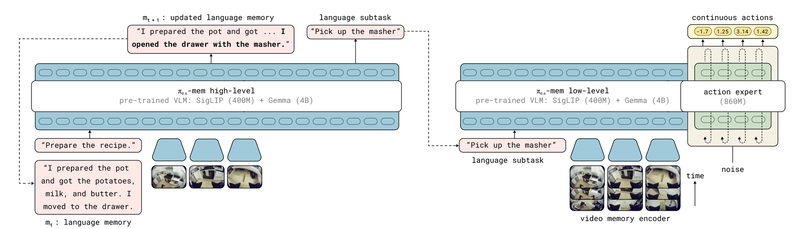
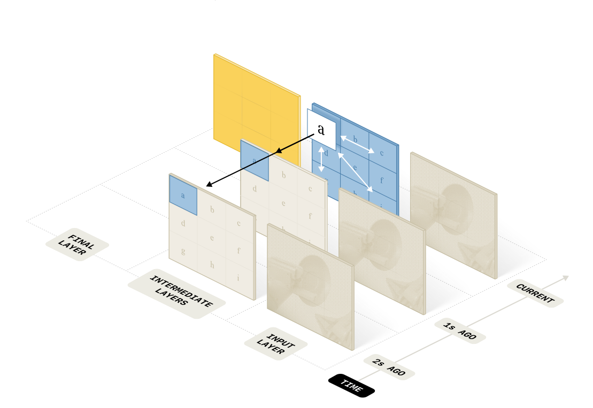
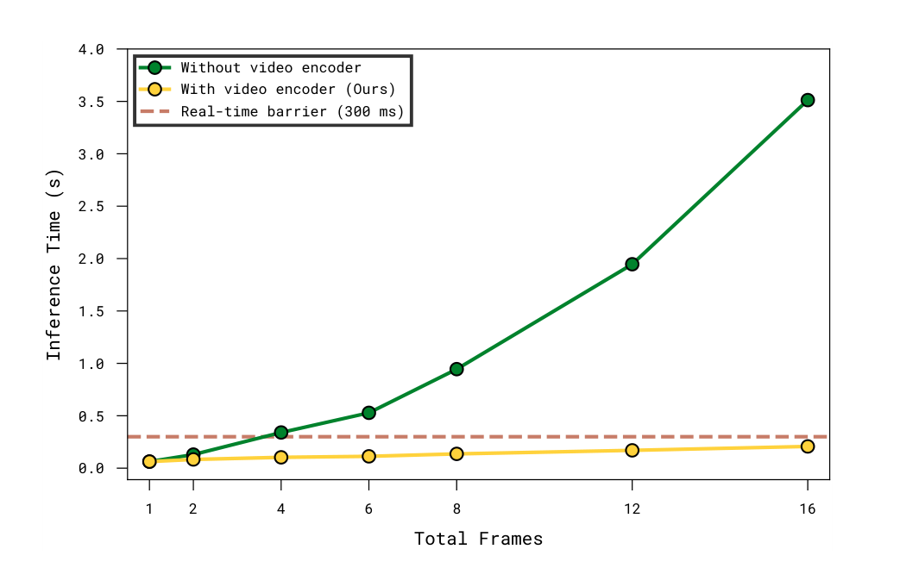
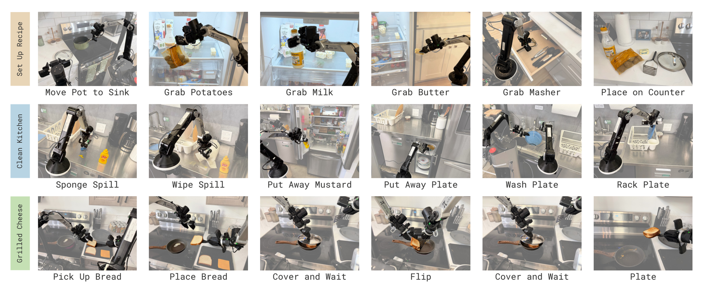

能拿到的是目前最清晰的一套「双尺度记忆接口」：稠密视觉只保留数十秒、用视频编码器压成与单帧等量的 token；语义进度压到一段几十到几百字的自写摘要，由高层策略在子任务边界更新。代价是这套接口绑在 \(\pi_{0.6}\) 的私有预训练配方上，摘要质量完全依赖离线大模型造标签的质量，且没有任何机制校验摘要是对的。
- 最小可复用件
- 高层/低层分工 + 「模型自己决定何时改写摘要」的训练方式（离线 LLM 造标签、推理时零额外调用）。
- 主要风险
- 摘要漂移后被逐步反复读取，错误会自锁；视频窗口只有几十秒，超出即彻底遗忘。
- 复现门槛
- 需 \(\pi_{0.6}\) 级底座与大规模混合预训练；视频编码器本身不引入新参数，可单独摘出。
1 核心摘要
长时程操作任务的记忆需求天然是分层的：机械臂挡住目标物时，机器人需要的是「几秒前的清晰画面」；而「这锅汤里放过盐没有」「哪几个柜门是我开过还没关的」，需要的是跨越十几分钟的语义事件记录。把所有历史帧直接塞进策略上下文，在几十秒量级就会崩掉——论文 Figure 3 给出的实测是：4 路相机、单张 H100 上，朴素拼接 16 帧的推理时延约 3.5 s，而他们要求的实时门槛是 300 ms 量级（论文引用 [6,7] 作为该门槛的依据）。
MEM 的做法是把 \(\pi (a_{t:t+H} | o_{t-T:t}, g)\) 因式分解成两层：高层策略 \(\pi _{\mathrm{HL}}\) 读任务指令 \(g\)、上一版语言记忆 \(m_t\) 和当前观测，输出下一个子任务指令 \(l_{t+1}\) 与更新后的记忆 \(m_{t+1}\)；低层策略 \(\pi _{\mathrm{LL}}\) 读 \(l_{t+1}\) 与一个短得多（\(K\ll T\)）的观测窗口 \(o_{t-K:t}\)，输出动作块。两个尺度各用一种模态承载：短期用视频编码器压过的稠密图像（每 4 层插一层因果时序注意力，丢掉历史 patch，token 数与单帧持平），长期用一段自然语言摘要。
关键数字：预训练用 6 帧、1 秒间隔（即 5 秒历史）；后训练可扩到 18 帧、54 秒；语言记忆支撑的最长任务跨度是 15 分钟（厨房整理、按食谱取物）。在 \(\pi_{0.6}\) 底座上，插筷子任务成功率相比无记忆版 +11%，开冰箱门 +62%（Figure 7 标注值）。
判定：这是「记忆接口设计」而非「记忆模型」的论文——它没有提出新的记忆读写算子，而是把「谁读谁、多久更新一次、摘要由谁写」定死并训到可用。想照抄接口，价值很高；想复现数字，门槛在底座与数据，不在记忆模块本身。
2 记忆环节定位
MEM 命中三格半。写入触发：语言记忆的更新时机不是固定间隔，而是由模型自己在子任务切换时决定——论文原文是「the model explicitly decides when and how to update its memory representation」，并在分析朴素文本记忆时补了一句关键行为描述：如果抓碗失败，MEM 的记忆「would simply not update the memory representation until the bowl was successfully picked up」，即写入锚在「子任务成功」这个边界上。记忆表征：双尺度，视频 latent + 自然语言摘要。动作接口：分层，高层出子任务、低层出动作块，这是记忆真正被消费的地方。长期维护只算部分命中——它靠提示大模型「能压就压」来控制长度，但没有显式的容量上限、淘汰策略或一致性校验。索引检索完全没做：没有记忆库，没有相似度检索，摘要就是一条滚动覆盖的字符串。
三个必须回答的问题，答案如下：
- 记忆单位是什么：短期是「每个相机过去 K 帧的 patch 表示」，不单独存储，经时序注意力折叠进当前帧的表示里；长期是「一条自然语言摘要 \(m_t\)」，整段文本是一个单位，随子任务推进被整体重写。
- 写入频率是什么：与高层策略的推理节拍一致，典型发生在子任务完成/切换时。论文没有给出高层推理的绝对频率（Hz）与单次耗时，这一点属于未报告项。
- 读取条件是什么：低层每一步都读最近 K 帧与当前子任务指令；高层每次触发都读完整摘要 + 当前观测。读取是无条件的，没有门控、没有相关性打分。
| 环节 | 输入 | 输出 | 交给下游 | 在线性 |
|---|---|---|---|---|
| 视频记忆（短期） | 最多 4 路相机，\(448\times448\)，K 帧（预训练 6 帧 / 后训练至 18 帧），加 K 个本体状态 token（线性投影） | 与单帧等量的视觉 token | 低层 VLA 主干 | 因果：时序注意力带 causal mask，不用未来帧；不用 oracle 状态，本体来自机器人传感器；窗口滑动，超出即丢 |
| 语言记忆（长期） | 上一版摘要 \(m_t\)、任务指令 \(g\)、当前观测 | \(m_{t+1}\)（重写后的整段摘要）+ 子任务 \(l_{t+1}\) | 高层下一次推理；\(l_{t+1}\) 给低层 | 因果：只依赖已发生事件；无容量上限、无淘汰，靠摘要自身的压缩倾向控制长度 |
| 动作接口 | 子任务指令 + 视频记忆 token + 本体 | 动作块 \(a_{t:t+H}\)（FAST 离散 token + 860M 流匹配专家） | 机器人控制器 | 用 RTC（推理时或训练时）做异步实时分块，避免推理阻塞执行 |
3 问题与动机
论文点名的失败模式都很具体，可以直接对照自己的系统：机械臂自遮挡目标物后抓空；人把物体放进四个抽屉之一，机器人不记得是哪个（无记忆时退化为 25% 的随机猜）；往磨豆机里加了几勺咖啡（无记忆时 50%）；一块玻璃擦了哪一半；菜谱里哪几样已经取过；开过的柜门有没有关。这些都是「少量比特、但必须跨很长跨度保留」的信息。
为什么不能用单一模态解决，论文给了逐条反驳，且都是针对具体基线：
| 路线 | 代表 | 论文指出的失效点 |
|---|---|---|
| 稠密历史直接入上下文 | Behavior Transformer、Octo 等多帧输入类 VLA | 几帧之后时延就不可接受（Figure 3），要么砍到极短，要么重采样，两者都丢信息 |
| 低维本体记忆 | TA-VLA 类 | 只记得自己的状态，记不住环境状态（抽屉里有什么） |
| 2D 点轨迹 | TraceVLA、点跟踪类 | 丢精确空间信息（抓取角度、高度），这正是修正滑脱抓取所需要的 |
| 关键帧稀疏化 | BPP、CycleManip、MERer 类 | 为了可算必须激进稀疏，丢环境与机器人动力学所需的密集采样 |
| 纯语言记忆 | OneTwoVLA 类 | 压缩率好，但同样丢抓取角度/高度这类精细量 |
| 平均池化单 token | ContextVLA（论文作 Pool Memory 基线） | 把整段历史平均成一个 token，多杯子位置、袋里还剩几件这类任务直接失效 |
另一个被单独拎出来的失败模式是朴素文本记忆的分布漂移。把历史子任务指令原样拼接当记忆，训练时几乎不会重复（人类示范近乎最优，一条指令只出现一次），推理时策略可能连续失败并反复输出同一条指令（「抓碗」→「抓碗」→「抓碗」→「放碗」），上下文分布与训练分布直接错位。MEM 的应对不是加数据增强，而是让记忆「在成功之前不动」——失败的尝试被结构性地丢弃，于是推理时的上下文形态天然接近训练时的形态。这条观察对任何做文本记忆的人都成立，比架构本身更容易迁移。
4 方法拆解
4.1 双尺度因式分解：把「长历史」换成「短窗口 + 一段文本」
论文把原本需要 T 帧历史的策略写成两个因子的乘积：
其中 \(K\ll T\)。这个近似成立的前提是：所有超过 K 帧仍然重要的信息，已经被 \(m_t\) 以语言形式带住了。换句话说，摘要就是长时记忆的唯一载体，它漏掉的东西永久丢失，没有任何回查通道——这是本页认为最需要在工程上补的一环（见第 6 节）。
值得注意的一处不一致：3.1 节写 \(\pi _{\mathrm{HL}}\) 的条件是当前观测 \(o_t\)，3.2 节又写成 \(o_{t-K:t}\)。从 Figure 2 看，高层一侧的输入只有文本（任务提示与摘要），多帧视觉输入全部画在低层一侧。按图理解更接近 3.1 节的写法，但正文两处表述冲突，属于需要向作者确认的点。
4.2 语言记忆：离线大模型造标签，推理时策略自写
这是全篇最值得抄的工程细节。训练数据的产生流程是：拿一条带子任务标注 \(l_{0:T}\) 的机器人 episode，把「已执行的子任务序列 + 每个子任务是成功还是失败」一起喂给一个现成的预训练 LLM，要求它「总结此前所有仍然与后续执行相关的信息」，并把输出当作 \(m_{t+1}\) 的监督标签。提示里明确要求「在不损失必要信息的前提下删除或压缩」，论文举的例子是：不必记住「我把浅绿碗、深蓝碗、亮黄碗放进了右上柜」，只要「我把三个碗放进了右上柜」。
关键在于推理路径：线上不调用任何 LLM。摘要由 \(\pi _{\mathrm{HL}}\) 自己以自回归方式写出（它就是一个 Gemma 4B 主干），所以「写摘要」不产生额外的一次 API 往返或额外模型加载，只是同一段文本生成的一部分。训练时用 LLM 造标签、推理时用策略复现，这个「教师离线、学生在线」的模式可以直接搬到任何有子任务标注的数据集上。
压缩在这里承担了双重职责：一是控长度（摘要越短，推理越快，也越不容易超出上下文），二是降分布漂移——把失败的重复尝试吸收掉，让「记忆的形态」在训练与推理之间保持一致。论文明确把朴素拼接版本明显更差归因于此，而不是归因于信息量不足。
4.3 视频编码器：不新增参数，把时间折进当前帧
做法是在标准 ViT 上改动注意力模式，从第 0 层起每 4 层插入一次时序注意力，并且把空间与时间注意力因式分解而不是联合做：先在各帧内部做 patch 间空间注意力，再对「同一 patch 位置、跨时间」做带因果掩码的注意力。复杂度从朴素时空联合的 \(O(n^2K^2)\) 降到 \(O(Kn^2 + nK^2)\)（n 为每帧 patch 数，K 为帧数）。
两个实现细节决定了它能不能直接接到已有 VLM 上：
- token 数不变：上层只保留当前时刻的 patch 表示，历史 patch 全部丢弃，因此送进 VLA 主干的 token 数与单帧 VLA 完全一致，主干的上下文预算不变。
- 零新增参数：时间信息只靠改注意力连接 + 一个固定的正弦时间位置编码进入，且编码在 \(t=0\) 处取 0（\(e(0)=0\)），保证 K=1 时输出与原始单帧 ViT 完全一致，于是可以直接从预训练 VLM 的视觉塔初始化。
本体状态另走一条路：\(\pi_{0.6}\) 原本把机器人状态写成文本，多帧就会爆 token，MEM 改为每帧状态做一次线性投影投到主干嵌入空间，K 帧只产生 K 个 token。
4.4 \(\pi_{0.6}\) 上的实例化与训练日程
底座是 \(\pi_{0.6}\)：Gemma3-4B VLM 主干（视觉侧 SigLIP 400M），同时用 FAST 离散动作 token 与 860M 流匹配动作专家，梯度不从动作专家回传到 VLM 主干，输入 \(448\times448\)、最多 4 路相机。预训练数据是遥操作示范、策略 rollout、人类纠正，加上视觉语言与视频语言任务（如视频描述）——后者是视频编码器能学到有用时空特征的关键。预训练阶段用 6 帧（5 帧历史 + 当前）、间隔 1 秒；后训练阶段把窗口扩到 18 帧、54 秒，作者把这种「后训练扩窗」类比为 LLM 的位置插值式上下文扩展。线上用推理时 RTC 或训练时 RTC 做异步实时分块。
Figure 2 里高层与低层都标着「SigLIP 400M + Gemma 4B」，即两个同规模的主干实例；是否共享权重、高层多久触发一次，论文正文未说明。

Figure 2：高层由任务提示与记忆摘要生成新摘要和语言子任务；低层结合子任务、多帧视觉表示与噪声生成动作块。

Figure 4：白箭头表示帧内空间注意力，黑箭头表示跨帧因果时序注意力；只有当前帧表示继续进入 VLA 主干。

Figure 3：四路相机、单张 H100 条件下，16 帧时朴素拼接约 3.5 s，视频编码器约 0.2 s；红虚线标示 300 ms 门槛。
5 证据与实验
评测全部在真机、自建厨房与办公场景完成，每策略每任务 10 次 rollout，报告均值 \(\pm\) 标准误。
| 实验 | 协议 | 论文报告结论 |
|---|---|---|
| 长时程：按食谱备料（Figure 6 左） | 训练 42 个食谱，评测 5 个食谱、未见厨房与未见物体；每取对一件 +1 分，多数食谱 6–7 分 | 无记忆的 \(\pi_{0.6}\) 在这类任务上明显失败；只有视频记忆或只有文本记忆都不足；两者结合最好 |
| 长时程：清理厨房（Figure 6 中） | 擦台面、烘干、收纳、洗碗（正反面、是否加洗洁精）、收盘；平均 8 个子任务，每个 +1 | 同上；论文特别指出无视频记忆时机器人会「卡住」，不知道自己擦了多久 |
| 消融：朴素文本记忆 | 把历史子任务指令原样拼接（不压缩）作为高层输入 | 明显差于模型自写的压缩摘要，归因于训练/推理分布漂移 |
| 上下文内适应：夹筷子（Figure 7） | 训练时桌子高度取上半区间，评测取最低高度；+1 夹起、+1 放入，满分 2 | 有记忆相对无记忆 +11% 成功率 |
| 上下文内适应：开冰箱（Figure 7） | 门轴方向无视觉线索；从人类纠正数据微调，训练时保留失败尝试在短期记忆中；评测以 \(\le 4\) 次抓取内打开为成功 | 有记忆相对无记忆 +62% 成功率 |
| 核心记忆能力（Figure 8） | 三杯换位、找物（四抽屉）、拆杂货袋、两勺咖啡、烤三明治、擦窗 | MEM 是唯一在全部能力上都表现好的方法；Pool Memory 在长跨度任务上退化，Proprio Memory 只在需要记自身状态时有效 |
| 预训练必要性（Figure 9） | 仅在后训练阶段引入视频编码器（从 \(\pi_{0.6}\) 检查点出发） | 明显低于全程预训练版本；即使两者底座相同 |
| 无记忆任务不退化（Figure 10） | 摆桌、叠衬衫、铺床、装箱等 7 项灵巧任务 | 与无记忆 \(\pi_{0.6}\) 持平，未出现此前文献报告的「加记忆就掉点」 |
这些数字在什么条件下成立。（1）全部是同一实验室、同一机器人平台、同一批操作员下的真机结果，Figure 6/8/10 只给了柱状图，没有表格数值，正文也没有给出各任务的绝对成功率，只给「显著更好」这类排序结论；本页因此只引用明确标注的 +11% / +62%，不还原柱高。（2）10 次 rollout 的标准误在任务成功率 50% 附近约为 16 个百分点，因此 5–10 个百分点级别的差异在这些任务上无法区分——论文也没有做显著性检验。（3）三个消融（无记忆 / 仅视频 / 仅文本 / 朴素文本+视频 / 完整）是同一底座、同一数据下的内部对比，可以横向看；但与 Pool Memory、Proprio Memory 的对比是作者重新实现的版本，并非原文系统，只能说明「这个思路在同等底座下更弱」，不能说明原论文方法本身的水平。（4）\(\pi_{0.6}\) 未公开权重，外部无法复现绝对数值，所有百分比都不可跨论文比较。
另外有一处内部矛盾：正文说评测用「5 个食谱、未见厨房、未见物体」，附录 B 却写「在多种未见场景上评测，使用见过的食谱」。两者对「食谱是否见过」的表述相反，引用时应以正文为准并标注存疑。

Figure 5：三行依次展示备料、清理厨房和烤三明治任务的关键执行阶段。
6 优点、局限与 VLA 适配
可迁移
① 分层接口本身：高层只出「一句子任务 + 一段摘要」，低层只吃固定窗口，这个切分与具体模型无关。② 视频编码器零新增参数、可从单帧 ViT 初始化，K=1 时严格等价，可无损接到任何 SigLIP/DINOv2 视觉塔上。③ 离线 LLM 造摘要标签、线上策略自写，避免了在线调用大模型的延迟与成本。④ 「成功前不更新记忆」这条规则，对任何文本记忆方案都是低成本的正则。
不成立的前提
① 需要 \(\pi_{0.6}\) 级底座与含视频语言任务的大规模混合预训练，Figure 9 说明只在后训练阶段加记忆会明显变差。② 需要 episode 级的子任务标注与成功/失败标记，才能造摘要标签；没有标注的数据集要另找标注来源。③ 上下文内适应依赖「失败尝试 + 人类纠正」成对数据，且训练时要把失败留在短期记忆里。④ 300 ms 级别的时延是在单张 H100、4 路相机下测的，换硬件或加相机需重测。
延迟结构。这套设计把延迟压力从「长上下文」转移到「两次前向」。低层每步都要跑一次 VLM 主干 + 动作专家；高层在其触发时再跑一次同规模主干。论文用 RTC 把推理与执行解耦，因此稳态延迟由低层决定，高层尖峰被异步吸收——但这也意味着高层一旦卡住，低层会用旧子任务继续执行，存在「子任务已经做完还在做」的窗口。论文没有报告高层单次耗时与触发频率，这是评估落地成本时最缺的一块。
真机闭环风险。最危险的不是摘要不够长，而是摘要写错且无人纠正：摘要每个高层步都被完整读取，一旦把「已洗过」写成「没洗过」，策略会重复执行；反之会跳过步骤。系统里没有任何回查原始帧的通道，也没有对摘要做一致性检查——这与 MemoryVLA 那种保留感知记忆、可按需回看的设计正好互补，一个负责「记结论」，一个负责「留证据」。第二个风险是高层/低层失同步：低层执行的是 \(l_{t+1}\)，而 \(l_{t+1}\) 是基于摘要和当前帧生成的，若摘要滞后于真实进度，低层会在错误子任务上跑满一个动作块。第三个风险是窗口边界：视频记忆最多 54 秒、预训练只有 5 秒，超过这个跨度的视觉细节不存在任何降级路径。
历史超出上下文怎么办。论文的答案是「不让它超」：靠压缩把摘要维持在短长度，而不是靠截断或检索。这把问题从「上下文长度」转成了「摘要是否记得住」。代价是没有兜底：当任务长到摘要本身开始丢信息（比如 20 个物品的清单），系统没有机制发现，也没有分页、摘要树或摘要回滚。作者在结论里也承认，跨 episode、跨天/月的记忆是未来工作。
在我方系统里的最小版本。保留低层策略不动（\(\pi_{0.5}\) 类：VLM 主干 + 动作专家 + 动作块），只加两件事：一个 30 秒视觉环形缓冲（8 帧、间隔 4 秒，或 6 帧 \(\times\) 1 秒 + 2 个关键帧，视相机数量定），配一个「每 4 层加因果时序注意力」的视觉塔改造；一段不超过 200 字的滚动摘要，由高层 VLM 在「子任务成功」事件上重写，模板固定为「已完成 / 当前正在 / 尚未完成且需注意（含柜门、抽屉开合状态）」。高层推理降到 1 Hz 或事件触发，只在摘要变化时刷新子任务，其余时间复用旧子任务。先用离线 LLM 在自有标注数据上造 2–5 万条摘要标签做 SFT，再用线上日志迭代——这一步比改架构更决定成败。
7 落地清单
- 先定接口再训模型。写出两段 schema：
memory = {done: [...], current: "...", pending: [...], scene_state: "..."}，硬限 200 字；subtask限一句话、动词开头。验收：随机抽 200 条训练 episode，让离线 LLM 按同一模板生成摘要，人工检查「已完成项无遗漏」\(\ge 95\%\)。 - 写触发条件写死在代码里，而不是交给模型自由发挥。初版用「子任务成功 + 每 20 秒兜底」双触发，模型只负责改写内容；跑通后再放开为纯模型决定。验收：单次 episode 内摘要更新次数与真实子任务数偏差 \(\le 1\)。
- 视频窗口按预训练 6 帧 / 1 秒起步，后训练再扩。扩窗时保持「丢历史 patch、token 数不变」，并在扩窗前用 K=1 输入做一次等价性回归（与单帧 ViT 输出逐元素比对，误差应为 0）。验收：16 帧输入下单步时延不超过基线单帧的 1.3 倍。
- 加一道摘要校验，这是论文没有的。用低层最近 N 步的动作与视觉变化做一次低成本一致性检查（例如「摘要说已放上柜，但末端仍在台面附近持续运动」即判为可疑），可疑时冻结摘要并回退到上一版。至少保留最近 2 版摘要，支持一键回滚。
- 把「失败尝试」显式喂进训练。采集「失败 + 人工纠正」成对片段，训练时保留失败在短期窗口内、并把摘要保持在失败前的状态。验收：在故意设置的失败注入测试里，第二次尝试的策略与第一次的余弦相似度明显下降（说明确实换了策略，而不是重复同一动作）。
- 分两套指标验收。记忆指标：抽屉定位、计数、已擦区域这类「少量比特」任务的成功率；回归指标：无记忆灵巧任务不掉点（对照 MERer 那类检索式方案，注意它们在外推场景的优势）。任一项掉超过 5 个百分点就不上线。
来源：M. Torne, K. Pertsch, H. Walke et al., "MEM: Multi-Scale Embodied Memory for Vision Language Action Models", Physical Intelligence 技术报告, arXiv:2603.03596v2, 2026-03-08。数字取自 Figure 3（时延）、Figure 7（+11% / +62%）、正文第 III–IV 节与附录 B（任务协议）；15 分钟、54 秒、18 帧、6 帧、860M、\(448\times448\) 等均出自正文与 Figure 2。
相关页面：MemoryVLA 感知-认知记忆 · MERer 经验检索 · SimpleMem-VLA · 返回专题三